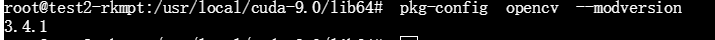
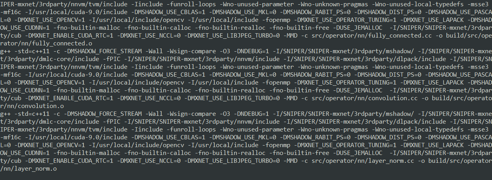
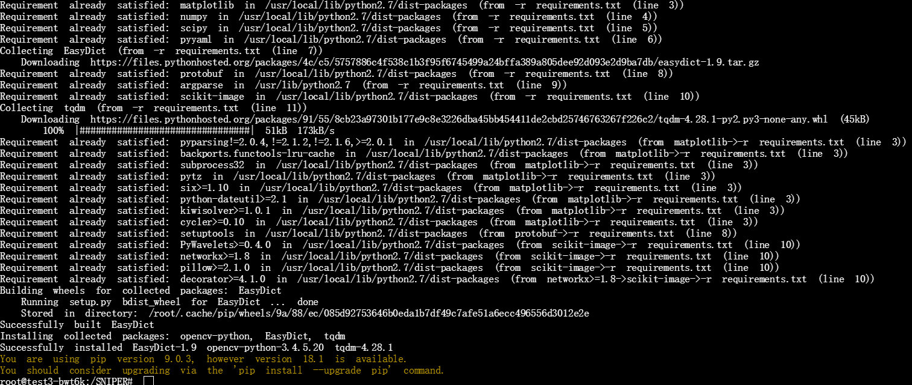
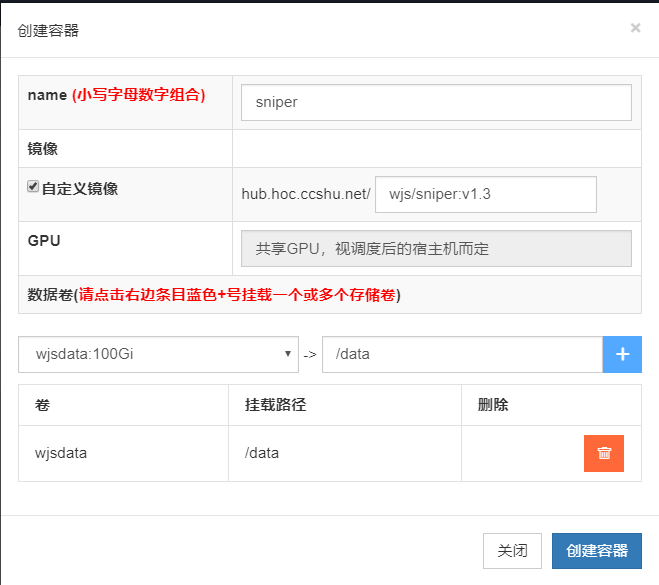
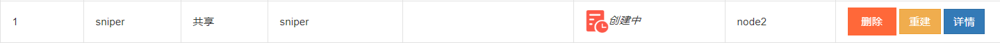

本文记录了如何在学校机器学习平台上创建一个基于Mxnet的Sniper镜像。
说明
由于此镜像是用于学校机器学习平台,所以文中会出现FTP服务器等字眼,其实是在平台上使用镜像创建一个容器时,平台会自动将服务器上我所申请的文件存储区mount到创建的容器,我通过FileZillaFTP工具与在平台申请的文件存储区进行连接
本文教程虽然有了一个FTP过程,但是如果是生成本地镜像,不考虑FTP,无视文中相关部分即可
虽然本文中写了关于压缩的相关内容,但是最终并没有使用压缩,原因是由于压缩后出现未知问题,导致在平台上创建的容器不能使用宿主机的NVIDIA驱动,并不能成功运行Demo
环境
本机环境
- windows 10 专业版
- docker client version 18.09.0
- docker server version 18.09.0
- FTP工具 FileZilla
平台环境
- docker version 17.06.2-ce
镜像环境
- python 2.7.12
- CUDA version 9.0.176
- pip 9.0.3
一 配置基础镜像
从学校机器学习平台上拉取原始镜像,因为这个镜像配好了一些基本的环境,如python2.x,CUDA9.0等等,所以直接使用它们的镜像作为基础镜像比较省心省力docker pull hub.hoc.ccshu.net/ces/deepo:all-py27-jupyter-ssh
拉取到镜像之后,可以选择使用Dockerfile来生成我们需要的镜像,但是往往我们需要在镜像中添加许多库/包/插件,而且使用Dockerfile来生成镜像很容易出BUG.当然,最好的方式是使用Dockerfile,前提是你能确保Dockerfile文件中的每一行命令都不会出错.
在当前情况下,我选择使用从容器生成镜像的方法,这种方式会使得最终生成的镜像占内存巨大,但是可以在容器内部调试每一步配置过程.
使用docker run -itd --name [name] hub.hoc.ccshu.net/ces/deepo:all-py27-jupyter-ssh开启一个容器
使用docker ps -a查看正在运行的容器ID
使用docker exec -it [name] /bin/bash进入容器
在容器中使用cat /etc/issue命令查看容器的操作系统版本
结果输出: Ubuntu 16.04.4 LTS \n \l
安装 apt-file
安装apt-file
apt-get install apt-file -y
出现错误:

使用apt-get install apt-file -y --fix-missing同样不能解决问题
考虑换源
cp /etc/apt/sources.list /etc/apt/sources.list.bak备份系统原有的源
安装Linux下的文本编辑器nano,执行命令apt-get install nano -y
安装nano成功后,执行nano /etc/apt/sources.list修改源文件
在打开的文件中,将内容替换为1
2
3
4
5
6
7
8
9
10
11
12
13
14
15
16
17
18# deb cdrom:[Ubuntu 16.04 LTS _Xenial Xerus_ - Release amd64 (20160420.1)]/ xenial main restricted
deb-src http://archive.ubuntu.com/ubuntu xenial main restricted #Added by software-properties
deb http://mirrors.aliyun.com/ubuntu/ xenial main restricted
deb-src http://mirrors.aliyun.com/ubuntu/ xenial main restricted multiverse universe #Added by software-properties
deb http://mirrors.aliyun.com/ubuntu/ xenial-updates main restricted
deb-src http://mirrors.aliyun.com/ubuntu/ xenial-updates main restricted multiverse universe #Added by software-properties
deb http://mirrors.aliyun.com/ubuntu/ xenial universe
deb http://mirrors.aliyun.com/ubuntu/ xenial-updates universe
deb http://mirrors.aliyun.com/ubuntu/ xenial multiverse
deb http://mirrors.aliyun.com/ubuntu/ xenial-updates multiverse
deb http://mirrors.aliyun.com/ubuntu/ xenial-backports main restricted universe multiverse
deb-src http://mirrors.aliyun.com/ubuntu/ xenial-backports main restricted universe multiverse #Added by software-properties
deb http://archive.canonical.com/ubuntu xenial partner
deb-src http://archive.canonical.com/ubuntu xenial partner
deb http://mirrors.aliyun.com/ubuntu/ xenial-security main restricted
deb-src http://mirrors.aliyun.com/ubuntu/ xenial-security main restricted multiverse universe #Added by software-properties
deb http://mirrors.aliyun.com/ubuntu/ xenial-security universe
deb http://mirrors.aliyun.com/ubuntu/ xenial-security multiverse
这里使用的源是阿里的镜像站,也可以使用网易163的,源如下:1
2
3
4
5
6
7
8
9
10deb http://mirrors.163.com/ubuntu/ xenial main restricted universe multiverse
deb http://mirrors.163.com/ubuntu/ xenial-security main restricted universe multiverse
deb http://mirrors.163.com/ubuntu/ xenial-updates main restricted universe multiverse
deb http://mirrors.163.com/ubuntu/ xenial-proposed main restricted universe multiverse
deb http://mirrors.163.com/ubuntu/ xenial-backports main restricted universe multiverse
deb-src http://mirrors.163.com/ubuntu/ xenial main restricted universe multiverse
deb-src http://mirrors.163.com/ubuntu/ xenial-security main restricted universe multiverse
deb-src http://mirrors.163.com/ubuntu/ xenial-updates main restricted universe multiverse
deb-src http://mirrors.163.com/ubuntu/ xenial-proposed main restricted universe multiverse
deb-src http://mirrors.163.com/ubuntu/ xenial-backports main restricted universe multiverse
更改好源文件后,执行sudo apt-get update更新源
再次执行apt-get install apt-file -y,可以成功安装apt-file包
之后执行apt-file update更新apt-file cache
使用apt-file find [name]可以查找计算机上文件的位置,很方便
使用apt-file search [name]可以搜索缺少的库,解决文件缺失依赖
选择好自己需要的包,然后使用apt-get install [name]即可
- 如果需要把镜像上传到云上使用,有可能需要网络服务,
- 执行
apt-get install net-tools安装ifconfig - 执行
apt-get install iputils-ping安装ping
此时为了避免诸如使用ping [IP]有效,但是ping [HOST]无效的情况,需要使用nano /etc/resolv.conf修改配置文件
将namespace后的IP地址更改为8.8.8.8或者4.4.4.4
或者使用echo "nameserver 114.114.114.114 > /etc/resolv.conf"也可以
退出保存即可
有可能上述修改DNS的方式并不成功,原因是在云上运行容器时,配置文件自动修改,如果发生这种情况,请每次在新开一个容器时,手动修改配置文件的DNS服务器,使其可以使用网络服务
二 安装编译依赖各种包
在电脑上空闲的地方,从Github拉取Sniper项目
git clone --recursive https://github.com/mahyarnajibi/SNIPER.git
因为我是在学校机器学习平台上运行docker容器,所以选择直接将clone下的文件上传至容器
mount的ftp服务器,使用的软件是FileZilla上传成功后可以在容器内通过
cd /data/[file or folder name]进行访问
如果要在本地镜像内操作的话,也可以直接把本机文件或文件夹拷贝过去docker cp 本地文件路径 ID全称:容器路径
cd /data/SNIPER/SNIPER-mxnetmake USE_CUDA_PATH=/usr/local/cuda-9.0
输出信息:
安装 jemalloc
选择安装jemalloc,这个工具可以加速编译,碎片整理,具体请自行谷歌
apt-get install autoconfapt-get install automakeapt-get install libtoolgit clone https://github.com/jemalloc/jemalloc.gitcd jemallocgit checkout 4.5.0安装4.5.0版本的jemalloc,5.x版本的有坑,深坑./autogen.shmakemake install_bin install_include install_lib,之所以不使用make install是因为会报错,如下:
切换至SNIPER-mxnet文件夹,再次make USE_CUDA_PATH=/usr/local/cuda-9.0
虽然可以编译,但是有以下信息:
强迫症必须搞定它,果断ctrl+c终止编译
安装 pkg-config
- 打开https://pkg-config.freedesktop.org/releases/
- 下载最新的,现在看到的是
pkg-config-0.29.2.tar.gz - 下载好之后,通过
FileZilla等工具传输到FTP服务器 - 在容器内
cd到压缩包位置 tar -xf pkg-config-0.29.2.tar.gzcd pkg-config-0.29.2./configure --with-internal-glib,注意,中间是一个空格,非常关键make && make install
再次make USE_CUDA_PATH=/usr/local/cuda-9.0
算了，还是安装一下cudnn吧
安装 cudnn7.0
- https://developer.nvidia.com/rdp/cudnn-archive 下载cuDNN Libraries for Linux,不要下载 Power 8
- 把下载好的包上传到FTP服务器
cd到包位置cp cudnn-9.0-linux-x64-v7.solitairetheme8 cudnn-9.0-linux-x64-v7.tgztar -xvf cudnn-9.0-linux-x64-v7.tgzcp include/* /usr/local/cuda-9.0/includecp lib64/* /usr/local/cuda-9.0/lib64chmod a+r /usr/local/cuda-9.0/include/cudnn.h /usr/local/cuda-9.0/lib64/libcudnn*export PATH=/usr/local/cuda-9.0/bin:$PATHcd到/usr/local/cuda-9.0/lib64nano ~/.bashrc,关联环境变量- 在最后一行加入
export LD_LIBRARY_PATH=/home/cuda/lib64:$LD_LIBRARY_PATH source ~/.bashrcldconfig -v- 使用
cat /usr/local/cuda-9.0/include/cudnn.h | grep CUDNN_MAJOR -A 2查看cudnn版本
安装 OpenCV
- 使用
pkg-config opencv --modversion查看 - 发现已经有OpenCV

安装 OpenBLAS
apt-get install libopenblas-dev
编译 Mxnet
make USE_CUDA_PATH=/usr/local/cuda-9.0

心好累,总共make了将近两个半小时
编译c++文件bash scripts/compile.sh
这一步一定要在/SNIPER/文件夹下,不然贼坑,绝对不要cd到/SNIPER/scripts文件夹下再bash compile.sh,因为代码内有cd lib/nms等,如果不在/SNIPER文件夹下,会找不到文件
如果出现syntax error near unexpected token$’\r’’错误,可以使用sed命令将\r去掉,或者是在[Github](https://github.com/mahyarnajibi/SNIPER/blob/master/scripts/compile.sh)上将代码复制,使用nano编辑然后粘贴

可以使用cat -v [filename]查看
![]./create-sniper-docker-image/Snipaste_2019-01-03_16-33-27.png)
以^M结尾的代表你所处理的文件换行符是dos格式的“\r\n”`
我选择第二种笨方法,因为涉及的代码并不多
执行结果:
安装 dos2unix
由于发现这种简单的复制粘贴方式并不能很好的解决,所以查了一些相关资料
选择使用dos2unix来转换
apt-get install dos2unixdos2unix [filename]

问题解决啦
安装依赖
在/SNIPER/文件夹下pip install -r requirements.txt
一定要确保镜像内可以联网

测试Demo
bash download_sniper_detector.sh,download_sniper_detector.sh
文件在/SNIPER/scripts文件夹下
cd .. && python demo.py
运行成功!!!
三 生成镜像
- 使用
exit退出容器 - 使用
docker ps -a查看容器ID - 使用
docker stop [ID]停止容器 - 使用
docker commit -a "作者信息" -m "附带信息" [ID] [name]:[tag]生成镜像,会返回一个sha256开头的长ID,这个就是生成的镜像ID - 使用
docker images查看生成的镜像 - 如果需要的话,使用
docker push [name]:[tag]将刚刚生成的镜像推送到云上
四 压缩镜像
压缩镜像非常麻烦,但是也是有方法的,目前大概三种方法
- 使用
Dockerfile生成镜像 - 这种方法需要让容器在运行状态,使用
docker export [ID] | docker import - [name]:[tag]导出容器快照,并从快照生成镜像,这种方式可以大大压缩镜像,但是缺点是有可能会使得镜像中的环境变量、开放端口、默认进入命令改变或消失.使用这种方式时,最好在生成镜像之后,创建一个Dockerfile文件,From这个镜像,并添加端口和命令入口 - 使用
docker-squash压缩镜像,这个方法适用于Linux和Mac系统
目前可以运行的镜像是13.6G
hub.hoc.ccshu.net/wjs/sniper:v1.1
现在要对它进行压缩
第一步,移除镜像内的SNIPER文件夹,把其放到FTP服务器上去
- 开启一个容器
docker run -itd --name [name] [id] - 复制容器内文件到本地
docker cp [长ID]:[容器内路径] [本地路径],将放置在本地的文件夹上传至FTP服务器 - 进入容器
docker exec -it [name] /bin/bash - 删除容器内文件夹
/SNIPER/,使用rm -rf SNIPER,一定要小心使用 - 退出容器
exit
第二步,压缩镜像
压缩容器docker export [ID] | docker import - [name]:[tag]
可以看到,镜像体积少了大约2个G
由于使用这种方法会使得镜像丢失部分信息,所以,创建一个新的Dockerfile,在其中添加缺失的信息
第三步,完善镜像
在任意位置新建Dockerfile
输入1
2
3FROM [name]:[tag]
EXPOSE 22
ENTRYPOINT ["/usr/sbin/sshd","-D"]

然后docker build -t [name]:[tag] .,不要忘了最后的.
第四步 Push
docker push [name]:[tag]
至此,所有配置以及完成
镜像在hoc.hoc.ccshu.net的私有仓库里
SNIPER文件夹放置在机器学习平台服务器mount的目录里
五 测试
在平台上创建容器
耐心等待创建完成
创建成功

测试结果

测试失败
但是,使用未压缩的镜像测试成功